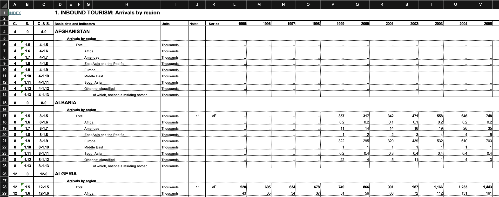
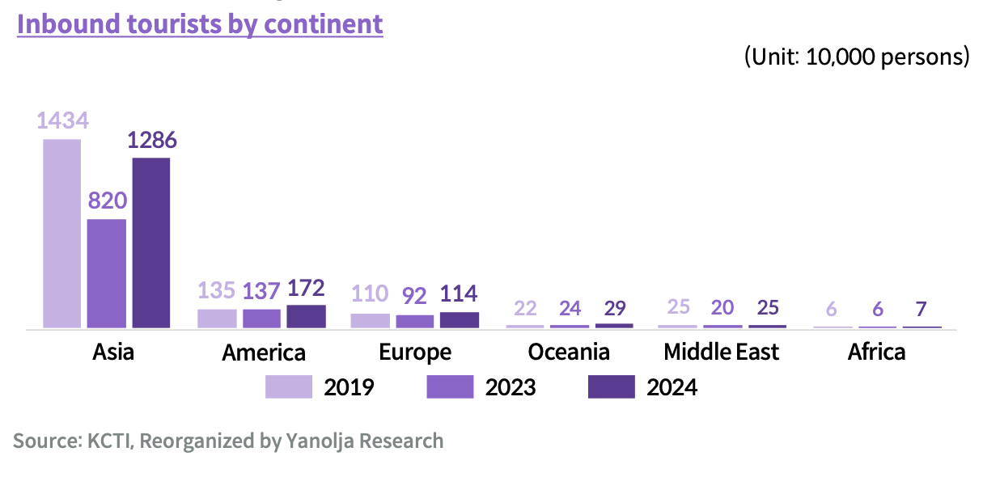

Course Project
STAT 184
Introduction
The two questions that this exploratory data analysis aims to answer are:
- Is there a correlation between international K-pop streaming trends and international tourist arrivals to South Korea?
- Which regions show the strongest tendencies toward increased travel to South Korea based off of trends in K-pop releases?
Given these guiding questions, the hypotheses that will frame the visualizations below are:
- The correlation coefficient p is zero (null hypothesis H0: p = 0).
- Asia will have the strongest tendencies toward increased travel, as the continent demonstrating the “fastest growth in leisure spending” (Our Culture Mag & Partners, 2025).
Background Information
Originally starting in the 1990s as a musical subculture in South Korea, K-pop (or Korean Pop) has experienced an international boom in popularity, generating billions of dollars every year. It stands to reason that after becoming such a global sensation, K-pop has not only impacted South Korea’s economy but sparked interest in Korean culture.
This exploratory data analysis aims to analyze the fluctuations in inbound tourist arrivals to South Korea and compare them to K-pop releases to identify a trend between the two.
The possible uses of this information would be useful for businesses and companies that deal with incoming flow of tourists like hotels, ride-shares, airlines, and tour guides. Evidence of a greater trend could allow businesses to use K-pop releases as metrics to help plan future business activity.
Data Summary
Most Streamed Spotify Songs 2024 - Link
This dataset comes from Kaggle, an online dataset repository. It contains data about streaming, engagement, rankings on the most widely used music streaming platforms, like YouTube, Apple Music, and the titular Spotify (“datasets/Most Streamed Spotify Songs 2024.csv”; Nelgiriyewithana, 2024). Originally gathered for music analysis and platform comparison, I will be using the number of Spotify Streams and YouTube likes as factors determining engagement and popularity of a track.
Spotify took the top spot of the music streaming industry, boasting 640 million monthly active users worldwide and operating in 237 countries and territories as of 2025 (Spotify, 2025; Spotify, n.d.). The previous leader, Tencent, is largely based in China and its assorted regions, however its streaming data is unavailable to me at this time.
YouTube has remained the titan of the user-created long-form online video platform, dominating the market and only beat out by streaming services Netflix, Disney+, and Amazon Prime Video, all of whom do not have the option to stream K-pop music (Pangarkar, 2025).
The final attribute that I need from this data would be the data about the actual music: the title of the track, the artist’s name, and the release date. With this selection, each case is a single track and the data is easier to analyze.
400+ K-Pop Groups Dataset - Link
The K-pop group dataset also comes from Kaggle and provides data about many K-pop groups with the aim to provide a comprehensive resource for K-pop fans, researchers, and enthusiasts. This data provides a variety of data about different K-pop groups but main attribute of interest is the English name of the groups (“datasets/kpopgroups.csv”; Arias, 2023).
While debut year may have an impact, it was deemed negligible due to the low amount of international attention most groups get at conception. Before the international accessibility of K-pop information before 2024, groups acquired fame through their debut songs as opposed to any external marketing. Thus, I judged that only considering tracks attributed to each group would be sufficient representation. Since there is only one attribute, each case is the K-pop group listed.
1700+ K-Pop Idols Dataset - Link
Much like the K-pop group dataset, the K-pop idol dataset comes from Kaggle and contains data about a myriad of idols (“datasets/kpopidolsv3.csv”; Arias, 2023). Although K-pop groups create the bulk of the tracks, there is a recent trend of individual members from well-known groups like BTS, Blackpink, and TWICE producing solo albums and tracks that generate a lot of interest.
Therefore, the idols dataset is necessary to give a more complete view of the K-pop music landscape and make sure no large releases are unaccounted for.
Tourism Statistics Database - Link
Aside from K-pop, the other part of my analysis comes from tourism data from the United Nations World Tourism Organization (UNWTO), whose public dataset tracks annual international inbound arrivals to different countries in thousands and tracked by region from 1995 to 2022. The UNWTO is a specialized agency of the United Nations dedicated to universally accessible tourism, including data transparency.
This dataset is incredibly important, as it shows the flow of travelers into Korea and will be how I analyze arrivals.
While originally formatted with variables acting as headings both horizontally and vertically (see Figure 1), data cleaning was needed to properly format it for analysis. The first step was isolating the data about South Korea (listed as Republic of Korea) and reformatting it so that each case is the thousands of inbound tourists during a certain year and from a certain region.
Additionally, I combined the “South Asia” with the “East Asia and the Pacific” columns in order to account for following dataset. After undergoing this data cleaning, the new .csv file became easier to process in R (“datasets/south korea visitor arrivals (thousands).csv”).
Brief Vol.5: Korea’s Inbound and Outbound Tourism Performance in 2024
Although the UNWTO dataset was thorough, it misses data from after 2022. The Yanolja Research data adds the arrival population data for 2023 and 2024, which were added to the “datasets/south korea visitor arrivals (thousands).csv file as additional data points. While the data points for 2019 don’t match up exactly, the data from Yanolja Research is the best approximation available publicly at the moment (see Figure 2).

Exploratory Data Analysis
To start out, I need to filter out the cases from the Spotify 2024 data frame for only the tracks produced by K-pop groups or idols. To do this, I first joined together the K-pop group and idols data frames and kept all of the cases to get a complete list of K-pop artists.
After cleaning up the K-pop artist data frame, I clean the 2024 Spotify data to only keep the attributes track name, artist name, release year, number of Spotify streams, and number of YouTube likes.
Then, I join together the Spotify 2024 data with the K-pop artist information to filter out all extraneous cases (see Figure 3).
| Artist Name | Track Name | Release Year | Spotify Streams | YouTube Likes |
|---|---|---|---|---|
| BTS | Dynamite | 2020 | 1872577908 | 62311179 |
| Jung Kook | Seven (feat. Latto) (Explicit Ver.) | 2023 | 1673557134 | 10125293 |
| BTS | Butter | 2021 | 1257974135 | 27744989 |
| BTS | Boy With Luv (feat. Halsey) | 2019 | 1165842896 | 35291841 |
| Jimin | Like Crazy | 2023 | 1165398518 | 4239579 |
From this data, we can identify the most likely suspects for major fluctuations in foot traffic by grouping the data by the artists and seeing who generates the most amount of streams and likes (see Figure 4).
| Artist Name | Total Engagement |
|---|---|
| BTS | 9992270097 |
| BLACKPINK | 7488993372 |
| Jimin | 4683682209 |
| Jung Kook | 3858697464 |
| NewJeans | 3604707139 |
| TWICE | 2541336253 |
| IVE | 1706428528 |
| LE SSERAFIM | 1591756031 |
| V | 1461264324 |
| Stray Kids | 1335742282 |
In addition to the K-pop data, there is also the tourism data. While the data is largely cleaned up already from previous processing, I still created an extra column that is the actual number of arrivals instead of just in thousands.
Thus, we are able to see the total amount of inbound tourists throughout the given data (see Figure 5).

Now that we have the data laid out, the proper analysis can begin. For the K-pop data, we are able to see the number of tracks (see Figure 6).

However, a major issue arises when solely considering the amount of songs produced because not all songs are created equal. Although to be on the list they have some degree of popularity, the tracks all have different amounts of engagement. The display of track distribution (see Figure 7) shows the inequality between tracks.

In order to combat this, I decided to use the median of track engagement distribution to weigh the track release count by year. I chose to use the median because, as seen in Figure 7, the data is very skewed. This means that using the mean wouldn’t be accurate to the desired value (the middle point of the data). The data seen in Figure 8 shows how the track count data is changed by the weight.
| Year | Track Count | Weighted Track Count |
|---|---|---|
| 2012 | 1 | 508622338 |
| 2013 | 1 | 129252343 |
| 2016 | 1 | 552497733 |
| 2017 | 3 | 1837938402 |
| 2018 | 5 | 2418706680 |
| 2019 | 6 | 2894464488 |
| 2020 | 16 | 6656706120 |
| 2021 | 9 | 2391287886 |
| 2022 | 25 | 7941470975 |
| 2023 | 49 | 10350481533 |
| 2024 | 25 | 855469475 |
Now, in comparison with the tourism data, we would need to join the two data frames on an inner join in order to get all of the years the two have in common. Then, the comparison can be made between the tourist arrivals and the weighted track count (see Figure 9).

Unfortunately, it looks like there is only a weak correlation between the two factors. This is supported by Figure 10 that shows the p-value is 0.3235, which is far greater than 0.05 which means that the correlation is not statistically significant enough to disprove the null hypothesis that there is a greater trend between tourism arrivals and K-pop releases.
Therefore, there is no observable correlation between the two factors.
| Statistic | Value |
|---|---|
| Correlation Coefficient | -0.1230 |
| T-Value | -0.9950 |
| Degrees of Freedom | 64.0000 |
| P-Value | 0.3235 |
| 95% Confidence Interval Lower Bound | -0.3550 |
| 95% Confidence Interval Upper Bound | 0.1220 |
However, the pure comparison of two factors doesn’t tell the whole story. Looking at the graphs by region (see Figure 11), the data points are tighter to the trend line compared the original graph (see Figure 9).

When looking closer at the correlation test results of the Pearson’s Product-Moment Correlation Test, we can see that the p-values are still all greater than 0.05 but there are subtle differences (see Figure 12).
| Region | Statistic | Value |
|---|---|---|
| Africa | Correlation Coefficient | -0.0870 |
| Africa | P-Value | 0.7988 |
| Americas | Correlation Coefficient | -0.1700 |
| Americas | P-Value | 0.6166 |
| Asia | Correlation Coefficient | -0.5120 |
| Asia | P-Value | 0.1077 |
| Europe | Correlation Coefficient | -0.3550 |
| Europe | P-Value | 0.2842 |
| Middle East | Correlation Coefficient | 0.1640 |
| Middle East | P-Value | 0.6299 |
| Other | Correlation Coefficient | -0.5330 |
| Other | P-Value | 0.0912 |
Below is a graphic view of the different correlation coefficients.

As you can see, there are a few main factors that caused the overall correlation coefficient to be so high, namely Africa, the Americas, and the Middle East. While the other three are high in comparison to the threshold, the distribution is clearly visible (see Figure 13).
Conclusion
This exploratory data analysis set out to examine the relationship between K-pop’s global popularity and international tourism arrivals to South Korea. Two guiding hypotheses were posed: that there is a correlation between international streaming trends and tourism, and that Asian regions would show the strongest connection.
After compiling, cleaning, and transforming datasets from Spotify, YouTube, Kaggle, and UNWTO, the data was explored through weighted metrics of K-pop track releases and regional tourist arrivals.
Key Findings
- There is no statistically significant correlation between the number of K-pop releases (weighted by engagement) and inbound tourism to South Korea, as shown by a Pearson correlation coefficient of -0.123 and a p-value of 0.3235 (see Figure 10)
- Regional breakdowns revealed stronger visual patterns, especially in regions like Asia and Europe, though even these lacked statistically significant p-values below 0.05 (see Figure 13)
- Artists like BTS, BLACKPINK, and TWICE were among the most influential in terms of total engagement (see Figure 4)
Interpretation
Although the hypothesis of a direct correlation was not supported by statistical evidence, regional variances suggest more nuanced trends for further investigation. It’s possible that other variables (like marketing or visa policies) influence the effect of K-pop on tourism.
The lack of significance may also reflect the lagging nature of tourism data or the limited scope of available streaming platforms used in the analysis. Additionally, international travel is influenced by numerous external factors such as geopolitical conditions, economic stability, and global events that could obscure the effects of cultural exports like music.
Future Research
Future analyses could benefit from a longer-term dataset of music releases and tourism statistics beyond 2024 as well as more data points (either more frequent or with individual countries rather than regions). Additionally, there could be cause to find more data on where specific artist fanbases are located.
Overall, this project illustrates the complexity of linking cultural phenomena like K-pop to economic indicators like tourism while also showing that culture-driven interests do not always cause immediate economic impact. Still, with K-pop’s continuing global reach and growing popularity in the mainstream, there remains potential for more direct connections to emerge over time.
References
Arias, N. I. A. (2023). 400+ K-Pop Groups Dataset. Distributed by Kaggle. Retrieved August 12, 2025. https://www.kaggle.com/datasets/nicolsalayoarias/kpop-groups-dataset
Arias, N. I. A. (2023). 1700+ K-Pop Idols Dataset. Distributed by Kaggle. Retrieved August 12, 2025. https://www.kaggle.com/datasets/nicolsalayoarias/all-kpop-idols
Elgiriyewithana, N. (2024). Most Streamed Spotify Songs 2024. Distributed by Kaggle. Retrieved August 12, 2025. https://www.kaggle.com/datasets/nelgiriyewithana/most-streamed-spotify-songs-2024
Hong, S., & Seo, D. (2025, February). [Yanolja Research] Brief Vol.5. Korea’s Inbound and Outbound Tourism Performance in 2024. Seoul; Yanolja Research.
Our Culture Mag, Partners. (2025, March 30). Global consumer spending on leisure activities reaches new highs as post-pandemic experiences boom in 2025. Our Culture. https://ourculturemag.com/2025/03/30/global-consumer-spending-on-leisure-activities-reaches-new-highs-as-post-pandemic-experiences-boom-in-2025/
Pangarkar, T. (2025, January 14). Online video platform statistics and facts (2025). Market.us Scoop. https://scoop.market.us/online-video-platform-statistics/
Spotify. (2025, July 29). Spotify reports second quarter 2025 earnings. Spotify. https://newsroom.spotify.com/2025-07-29/spotify-reports-second-quarter-2025-earnings/
Spotify. (n.d.). Where is Spotify available?. Spotify. https://support.spotify.com/us/article/where-spotify-is-available/
UN Tourism. (2024, January 31). Tourism Statistics Database. Distributed by UN Tourism. Retrieved August 12, 2025. https://www.unwto.org/tourism-statistics/tourism-statistics-database
Code Appendix
# Style guide: Tidyverse
library(ggplot2)
library(dplyr)
library(tidyr)
library(knitr)
knitr::include_graphics("images/Original_UN_Tourism_Data.png")
knitr::include_graphics("images/Yanolja_Research_Chart.png")
KPopGroupsRaw <- read.csv("datasets/kpopgroups.csv")
KPopIdolsRaw <- read.csv("datasets/kpopidolsv3.csv")
KPopArtists <- KPopGroupsRaw %>%
full_join(KPopIdolsRaw, by=join_by("Name"=="Stage.Name"))
KPopArtists <- KPopArtists %>%
select("Name")
Spotify2024Raw <- read.csv("datasets/Most Streamed Spotify Songs 2024.csv")
Spotify2024 <- Spotify2024Raw %>%
separate(Release.Date, sep="/", into=c("Month", "Day", "Year")) %>%
select("Track", "Artist", "Year", "Spotify.Streams", "YouTube.Likes") %>%
mutate(
Spotify.Streams = as.numeric(gsub(",","", Spotify.Streams)),
YouTube.Likes = as.numeric(gsub(",","", YouTube.Likes)),
Year = as.numeric(Year)
) %>%
filter(!is.na(Spotify.Streams), !is.na(YouTube.Likes), !grepl("NA", Spotify.Streams), !grepl("NA", YouTube.Likes))
KPopSpotify <- KPopArtists %>%
inner_join(Spotify2024, by=join_by("Name"=="Artist")) %>%
arrange(desc(Spotify.Streams))
KPopSpotifyDF <- as.data.frame(KPopSpotify %>% head(5))
kable(KPopSpotifyDF,
caption = "Top 5 Tracks by Spotify Streams (and associated data)",
col.names = c("Artist Name", "Track Name", "Release Year", "Spotify Streams", "YouTube Likes"))
PopularArtists <- KPopSpotify %>%
group_by(Name) %>%
summarize(
total_spotify = sum(Spotify.Streams),
total_youtube = sum(YouTube.Likes)
) %>%
mutate(total_engagement = total_spotify+total_youtube) %>%
arrange(desc(total_engagement)) %>%
select("Name", "total_engagement") %>%
rename(Total_Engagement = total_engagement)
PopularArtistsDF <- as.data.frame(PopularArtists %>% head(10))
kable(PopularArtistsDF,
caption = "Top 10 K-Pop Artists by Total Engagement on Spotify and YouTube",
col.names = c("Artist Name", "Total Engagement"))
TourismStatisticsRaw <- read.csv("datasets/south korea visitor arrivals (thousands).csv")
TourismStatistics <- TourismStatisticsRaw %>%
mutate(total_arrivals = arrivals*1000)
TourismStatistics %>%
group_by(region) %>%
ggplot(aes(x=year, y=arrivals)) +
geom_line(aes(color=region)) +
scale_y_continuous(n.breaks=10) +
scale_x_continuous(breaks=c(1995:2024)) +
theme(axis.text.x = element_text(angle=45, vjust=1, hjust=1)) +
labs(
x="Year",
y="Arrivals (in thousands)",
title="Tourism Traffic Inbound to South Korea from 1995-2024"
) +
theme(plot.title = element_text(hjust = 0.5)) +
theme(legend.position = "bottom")
Spotify2024 %>%
group_by(Year) %>%
summarize(
track_count = NROW(Track)
) %>%
ggplot(aes(x=Year, y=track_count)) +
geom_line() +
scale_x_continuous(breaks=c(1987:2024)) +
theme(axis.text.x = element_text(angle=45, vjust=1, hjust=1)) +
labs(
x="Year",
y="Track Count",
title="Number of Tracks made by K-pop Artists from 1987-2024"
) +
theme(plot.title = element_text(hjust = 0.5))
Spotify2024 %>%
ggplot(aes(x=Spotify.Streams)) +
geom_histogram() +
labs(
x="Spotify Streams",
y="Number of Tracks",
title="Track Distribution of Streams"
) +
theme(plot.title = element_text(hjust = 0.5))
WeightedTracks <- KPopSpotify %>%
mutate(total_engagement = Spotify.Streams + YouTube.Likes) %>%
group_by(Year) %>%
summarize(
track_count = n(),
median_engagement = median(total_engagement, na.rm=TRUE)
) %>%
mutate(weighted_track_count = track_count * median_engagement) %>%
select("Year", "track_count", "weighted_track_count")
WeightedTracksDF <- as.data.frame(WeightedTracks)
kable(WeightedTracksDF,
caption = "Track Count and Weighted Track Count by Year",
col.names = c("Year", "Track Count", "Weighted Track Count"))
ReleasesTourismComparison <- WeightedTracks %>%
inner_join(TourismStatistics, by=join_by("Year" == "year"))
cor_value <- cor(ReleasesTourismComparison$weighted_track_count, ReleasesTourismComparison$arrivals)
ReleasesTourismComparison %>%
ggplot(aes(x=weighted_track_count, y=arrivals)) +
geom_point(color="blue", size=3) +
geom_smooth(method="lm", se=FALSE, color="red", linetype="dashed") +
labs(
x="Weighted Track Count",
y="Tourist Arrivals",
title = paste("K-pop Releases vs. Tourism ( r =", round(cor_value, 3), ")")
) +
theme(plot.title = element_text(hjust = 0.5))
cor_test_result <- cor.test(ReleasesTourismComparison$weighted_track_count, ReleasesTourismComparison$arrivals)
VerticalCorTestDF <- data.frame(
Statistic = c(
"Correlation Coefficient",
"T-Value",
"Degrees of Freedom",
"P-Value",
"95% Confidence Interval Lower Bound",
"95% Confidence Interval Upper Bound"
),
Value = c(
round(cor_test_result$estimate, 3),
round(cor_test_result$statistic, 3),
cor_test_result$parameter,
round(cor_test_result$p.value, 4),
round(cor_test_result$conf.int[1], 3),
round(cor_test_result$conf.int[2], 3)
)
)
kable(VerticalCorTestDF,
caption = "Pearson’s Product-Moment Correlation Test Results of K-pop Weighted Tracks vs. Tourism"
)
ReleasesTourismComparison %>%
ggplot(aes(x = weighted_track_count, y = arrivals)) +
geom_point(color="blue") +
geom_smooth(method = "lm", se = TRUE, color = "red", linetype="dashed") +
facet_wrap(~ region, scales = "free") +
labs(
x = "Weighted Track Count",
y = "Tourism Arrivals",
title = "Tourism Arrivals vs. Weighted K-pop Track Count by Region",
caption = "Scatter plots with linear regression trend lines"
) +
theme(axis.text.x = element_text(angle=45, vjust=1, hjust=1)) +
theme(plot.title = element_text(hjust = 0.5))
# Credit to user ek-g at https://stackoverflow.com/questions/62359251/using-group-modify-to-apply-function-to-grouped-dataframe on Reddit for the original idea of using group_modify as an iterative function.
RegionCorDetailedDF <- ReleasesTourismComparison %>%
group_by(region) %>%
group_modify(~ {
df <- filter(.x, !is.na(weighted_track_count), !is.na(arrivals))
if (nrow(df) >= 2 && sd(df$weighted_track_count) > 0 && sd(df$arrivals) > 0) {
test <- cor.test(df$weighted_track_count, df$arrivals)
tibble(
Statistic = c("Correlation Coefficient", "P-Value"),
Value = c(round(test$estimate, 3), round(test$p.value, 4))
)
}
}) %>%
ungroup()
kable(RegionCorDetailedDF,
caption = "Correlation Test Results of K-pop Weighted Tracks vs. Tourism by Region",
col.names = c("Region", "Statistic", "Value")
)
RegionCorDetailedDF %>%
add_row(region="Overall", Statistic="Correlation Coefficient", Value=-0.123) %>%
add_row(region="Overall", Statistic="P-Value", Value=0.3235) %>%
filter(Statistic=="P-Value") %>%
ggplot(aes(x=region, y=Value)) +
geom_bar(stat='identity') +
labs(
x = "Region",
y = "Value",
title = "Correlation Coefficients based on Region"
) +
theme(plot.title = element_text(hjust = 0.5))